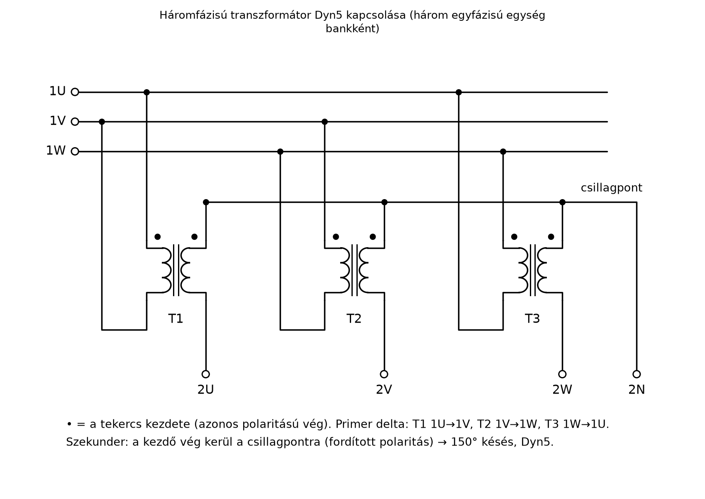
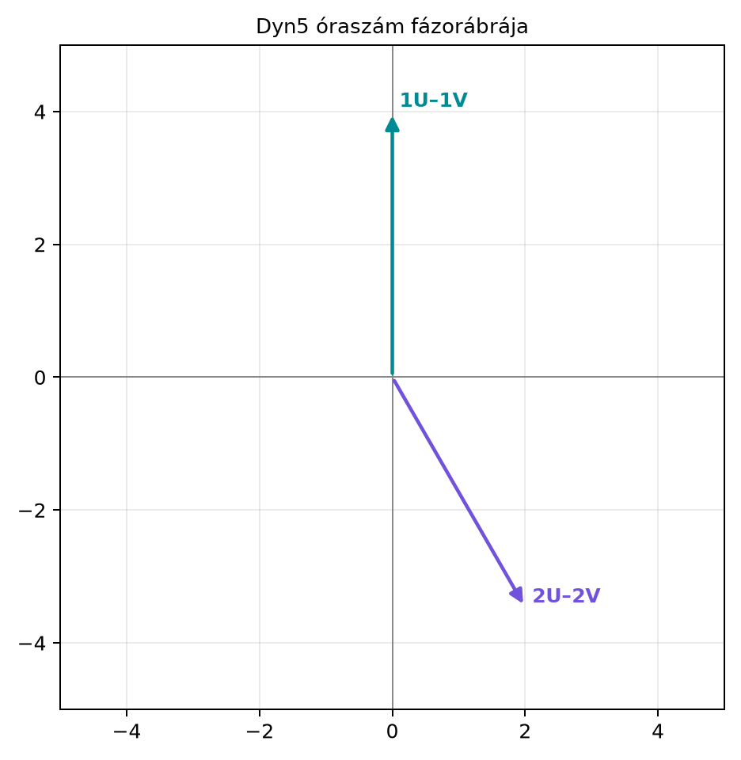

Egy iparterületen a szerelő új kisfeszültségű elosztót táplál meg, amely a közeli trafóállomás 10/0,4 kV-os transzformátoráról kap feszültséget. A transzformátor névtábláján ez áll: Dyn5. A bekötéshez tudnia kell, hogy a szekunder oldalon hol van a nullavezető, milyen fázissorrendre számíthat, és miért nem mindegy, hogy a primer oldal deltában vagy csillagban van-e kapcsolva. Ugyanígy, ha két transzformátort párhuzamosan kell kapcsolni, a kapcsolási csoport tévedése azonnal súlyos köráramot és meghibásodást okozhat. Ezért a kapcsolási csoport nem elvont gyártói adat, hanem a biztonságos üzem, a feszültségmérés és a hálózati illesztés kulcsa.
A következő kapcsolási rajz három egyfázisú transzformátorból felépített háromfázisú bank Dyn5 kapcsolását mutatja. A primer oldal delta (D), a szekunder oldal csillag, kivezetett nullavezetővel (yn). A pont (•) a tekercsek kezdetét, vagyis az azonos polaritású végeket jelöli. A szekunder tekercsek fordított polaritással, a kezdő végükkel kerülnek a csillagpontra – ettől lesz az óraszám 5 és nem 11. A rajz elvi vázlat, nem méretarányos.

A Dyn5 óraszám azt jelenti, hogy a kisfeszültségű oldali vonali feszültség 5 · 30° = 150°-ot késik a nagyfeszültségű oldali megfelelő vonali feszültséghez képest. Az óratárcsán a nagy mutató a nagyfeszültségű oldalt, a kis mutató a kisfeszültségű oldalt jelképezi; 5 óránál a kis mutató 150°-kal van a 12 órához képest.

A vektorábra tehát ugyanazt mutatja, mint a névtáblán a rövid „Dyn5” felirat, csak grafikusan.
Definíció. A háromfázisú transzformátor két alapvető felépítésben készülhet:
Megjegyzés. A gyakorlati szerelő többnyire a három oszlopos elosztótranszformátorral találkozik; a bank-elrendezés inkább erőművi vagy nagyipari környezetben fordul elő.
A háromfázisú transzformátor primer és szekunder tekercseit egyaránt csillagba (Y), deltába (D) vagy zegzugba (Z) köthetik. A jelölésben a nagybetű a nagyobb feszültségű oldalt, a kisbetű a kisebb feszültségű oldalt jelöli. Ha a csillagpont ki van vezetve, akkor a megfelelő oldalon N (nagybetű) vagy n (kisbetű) jelölést kapjuk.
Összefüggés. A csillag- és deltakapcsolás már ismert összefüggéseiből következik:
A zegzug (Z) kapcsolás speciális: minden fázis tekercse két féltekercsből áll, amelyeket különböző oszlopokra helyeznek, és egymáshoz képest ellentétes irányban kapcsolnak. Ez csökkenti a nulla sorrendű impedanciát, ezért a zegzug szekunder oldalú transzformátorok jól viselik az egyfázisú, aszimmetrikus terheléseket.
Definíció. A kapcsolási csoport a háromfázisú transzformátor primer és szekunder tekercseinek kapcsolási módját, valamint a megfelelő vonali feszültségek közötti fáziseltérést adja meg. A jelölés általános alakja:
Szabály. Az óraszám értéke 0 és 11 között van, és azt mutatja, hogy a kisfeszültségű oldali megfelelő vonali feszültség hány 30°-os szöggel késik a nagyfeszültségű oldali vonali feszültséghez képest. Az óratárcsán a nagy mutató a nagyfeszültségű oldalt jelképezi 12 órán, a kis mutató pedig a kisfeszültségű oldalt; az óraszám a kis mutató állása.
Példa. A Dyn5 jel azt jelenti:
Hasonlóan Yzn5 jelentése: nagy oldal csillag, kis oldal zegzug, kivezetett nullavezetővel, 150°-os késés; Yy0 jelentése: mindkét oldal csillag, nincs kivezetett nullavezető, és a fáziseltérés 0°.
Továbbvitt eredmény. A kapcsolási csoport ismeretét használjuk az Autó-, mérő- és kistranszformátorok, olajtrafó, védelmek, telepítés alfejezetben, ahol az olajtranszformátor üzembe helyezésénél az áttételt és a kapcsolási csoportot ellenőrizzük. A párhuzamos üzem feltételeit a Terhelés, hatásfok, veszteségek és kapcsolások alfejezet már tárgyalta.
A hazai közcélú elosztóhálózatokban a 10/0,4 kV-os vagy 20/0,4 kV-os transzformátorok (egyes körzetekben 22/0,4 kV-osak is; ellenőrizendő: az elosztói engedélyes aktuális műszaki előírása) leggyakoribb kapcsolási csoportja a Dyn5 (régebbi hálózatokon Yzn5 is előfordul, különösen aszimmetrikus terhelésű körzetekben). Ennek oka:
Figyelem. A nullavezető terhelhetőségét a transzformátor áramadatlapja és a hálózati engedélyes előírásai szabják meg. Aszimmetrikus terhelésnél a nullavezetőben a fázisáramok vektori összege folyik, ezért a nulla vezető túlterhelhető, ha a tervezés nem veszi figyelembe.
A háromfázisú transzformátorok kapcsait szabványosan jelölik, a feszültségszintek szerint:
A névtáblán a kapcsolási csoporton kívül általában szerepel:
Megjegyzés. A pontos névtábla-mezők gyártónként és szabványkiadásonként eltérhetnek, ezért mindig a tényleges adattáblát kell értelmezni.
Adott. Egy Dyn5 kapcsolási csoportú elosztótranszformátor:
Keresett. A nagy- és kisfeszültségű oldali névleges vonali áram.
Képlet. Háromfázisú rendszerben a látszólagos teljesítmény:
ahol a vonali feszültség, a vonali áram. Ebből:
Behelyettesítés.
Nagyfeszültségű oldal:
Kisfeszültségű oldal:
Ellenőrzés. Az áttétel . A névleges áramok aránya fordított: . A két oldal áramaránya megegyezik az áttétellel, tehát a számítás helyes. ∎
Adott. Egy transzformátor kapcsolási csoportja Yd11.
Keresett. A kisfeszültségű oldali vonali feszültség fáziseltérése a nagyfeszültségű oldalhoz képest.
Képlet. Az óraszám , az eltérés szöge:
Behelyettesítés. :
A 330°-os késés egyenértékű 30°-os sietéssel, ezért az Yd11 csoportban a kisfeszültségű oldali vonali feszültség 30°-ot siet a nagyfeszültségű oldalhoz képest. Megjegyzés. A szabványos óraszám mindig késést ad meg, de a 330°-os késés ugyanazt a vektort jelenti, mint a 30°-os sietés; a megfogalmazásnál a szabványos értelmezést használjuk. ∎
Hibás elképzelés. Valaki azt gondolja, hogy két azonos feszültségű és teljesítményű transzformátor párhuzamosan kapcsolható, ha mindkettő 10/0,4 kV-os. Ez téves.
Indoklás. Párhuzamos üzemben a két transzformátor primer és szekunder kapcsai azonos fázisú feszültségre kerülnek. Ha a kapcsolási csoportjuk eltérő, például az egyik Dyn5, a másik Yy0, akkor a szekunder feszültségeik között 150°-os fáziseltérés van, ami azonos nagyságú fázisfeszültségeknél kb. 444 V feszültségkülönbséget jelent (lásd az 5. feladatot). Ez a két szekunder oldal között nagy köráramot hajt, amely már üresjárásban is túlterhelheti a tekercseket, és pillanatszerűen tönkreteheti a transzformátorokat. A kapcsolási csoportnak azonosnak kell lennie (vagy azonos óraszámúnak), és emellett a feszültségáttételnek és a rövidzárási feszültségnek is össze kell illenie.
Szabvány. A háromfázisú teljesítménytranszformátorokra vonatkozó európai/magyar szabvány az MSZ EN 60076 sorozat (IEC 60076). Ebben a sorozatban rögzítik a teljesítménytranszformátorok névleges adatait, vizsgálatait, hűtési módjait és a kapcsolási csoportok jelölését. A kapcsolási csoport jelölésének logikája (betűk és óraszám) ebből a szabványból származik; a transzformátor kapocs- és kapcsolásicsoport-jelölését a teljesítménytranszformátor-szabványsorozat (MSZ EN 60076-1; ellenőrizendő: pontos szakasz és aktuális kiadás), a rajzjeleket az MSZ EN 60617 tartalmazza. (A forgógépek, motorok kapocsjelölését az MSZ EN 60034-8 adja; erről a Kapocsdoboz, csillag–delta bekötés és forgásirány alfejezet szól). A pontos szabványkiadásokat és az esetleges nemzeti kiegészítéseket ellenőrizni kell (aktuális MSZT-katalógus). A névtábla adatainál mindig a gyártói dokumentáció és a hatályos előírás a mérvadó.
Eset. Egy közcélú trafóállomásban 630 kVA, 10/0,4 kV, Dyn5 transzformátor üzemel. A szerelő egy új ipari fogyasztói csatlakozást készít elő, és a kisfeszültségű elosztóban ellenőrzi a fázissorrendet. Azt tapasztalja, hogy a szekunder oldalon a fázisok sorrendje L1, L2, L3, és a nullavezető a csillagpontból van kivezetve, a földeléssel összekötve. A fogyasztói mérőhelynél 400 V vonali feszültséget mér, fázisonként 230 V-ot a nullához képest. Egy egyfázisú, 3,5 kW-os fűtőtestet az L1 fázisra kötnek; ez aszimmetrikus terhelést okoz, de a Dyn5 transzformátor ezt jól viseli. A feszültség a másik két fázison csak minimálisan változik, a nullavezetőn a várható egyfázisú áram folyik. A szerelő tudja: ha egy időben több egyfázisú berendezés kerül ugyanarra a fázisra, a nulla vezető túlterhelhető, ezért a terhelést a fázisok között kiegyenlítve kell elosztani.
Tanulság. A Dyn5 jel rövid, de a gyakorlatban a szerelő számára azt jelenti, hogy a szekunder oldal csillagpontja kivezetett, a nullavezető használható, és a transzformátor jól tűri az egyfázisú fogyasztókat. A kapcsolási csoport félreértése azonban már a csatlakozás tervezésekor hibás döntéshez vezethet.
Az alábbi interaktív ábrán a felhasználó csúszkával kiválaszthatja a leggyakoribb kapcsolási csoportokat (például Yy0, Yy6, Dyn5, Yzn5, Yd11). A fázorábrán megjelenik a nagyfeszültségű oldali vonali feszültség referencia vektora (12 óra, függőlegesen felfelé), valamint a kisfeszültségű oldali megfelelő vonali feszültség vektora. Az óratárcsa az adott óraszámot, a szöveges mező a fáziseltérést fokban mutatja. Egy sematikus kapcsolási vázlat a primer és szekunder tekercsek kapcsolását (delta, csillag, zegzug, nullavezető) ábrázolja.
A statikus tartalék a Dyn5 állapotot mutatja: delta primer, csillag szekunder kivezetett nullavezetővel, 5-ös óraszám, 150°-os késés.
A kis- és nagybetű jelentésének felcserélése. Gyakori hiba, hogy valaki a Dyn5 jelet úgy értelmezi, hogy a szekunder oldal delta, a primer pedig csillag. A helyes: a nagybetű mindig a nagyobb feszültségű oldalt jelöli, tehát a D a primer delta, az y a szekunder csillag.
Az óraszámot közvetlenül foknak gondolni. Az 5 nem 5°-ot, hanem 5 · 30° = 150°-ot jelent. Ez a tévedés mérési jegyzőkönyvben vagy fázisforgatásnál rossz következtetéshez vezet.
A nullavezető kivezetését figyelmen kívül hagyni. Ha a szekunder csillag, de a nullavezető nincs kivezetve (például Dyn helyett Dy), akkor nem lehet 230 V-os egyfázisú fogyasztókat táplálni. A szerelőnek ellenőriznie kell, hogy a névtáblán és a kapocsdobozban valóban van-e n jelű kivezetés.
Eltérő kapcsolási csoportú transzformátorok párhuzamos kapcsolása. Ez súlyos hiba: még azonos feszültség és teljesítmény mellett is köráram keletkezik, amely a transzformátorokat és a kapcsolókészülékeket károsítja. A párhuzamos üzem előtt a kapcsolási csoportnak azonosnak kell lennie.
1. feladat (A)
Írd le szavakkal a Yzn5 kapcsolási csoport jelölését:
melyik oldal milyen kapcsolású, van-e nullavezető, és mekkora a
fáziseltérés?
2. feladat (A)
Hány fokos késést jelent a Dyn11 óraszám? Ábrázold ezt
az óratárcsán vektorokkal.
3. feladat (B)
Egy Dyn5 transzformátor névleges adatai:
,
,
.
Számítsd ki mindkét oldal névleges vonali áramát, és ellenőrizd az
áttétellel.
4. feladat (B)
Adott egy háromfázisú transzformátor kapcsolási rajza: a primer oldalon
a tekercsek csillagban vannak, a szekunder oldalon deltában. A
nagymutató a nagyfeszültségű oldali vonali feszültséget jelképezi, a
kismutató 11 órán áll. Írd fel a kapcsolási csoport jelét, és mondd meg
a szekunder fáziseltérést.
5. feladat (C)
Két transzformátort akarnak párhuzamosan üzemeltetni. Az egyik
Dyn5, a másik Yyn0, mindkettő 10/0,4
kV, 630 kVA. Magyarázd el, miért tilos a párhuzamos kapcsolás, és mi
történne, ha mégis megtennék. Válaszodban számítsd ki a két szekunder
oldal közötti feszültségkülönbség nagyságát is, feltételezve, hogy a
primer oldalak azonos feszültségre vannak kötve, és a fázisfeszültségek
azonos nagyságúak.
6. feladat (D)
Egy trafóállomásban a szerelő mérést végez. Azt méri, hogy a
kisfeszültségű oldalon a fázissorrend L1, L2, L3, és a 2N nullavezetőn
,
ha a három fázis árama kiegyenlített. Ezután az L1 fázisra egy
,
a másik két fázisra
terhelést kapcsol. Mekkora áram folyik ilyenkor a nullavezetőn, ha a
terhelés ohmos? Magyarázd el, miért fontos ez a Dyn5
transzformátornál.
Biztonsági korlát. Trafóállomásban csak jogosult, kioktatott személy dolgozhat; a mérés lakatfogóval (legalább CAT IV besorolású műszerrel), a feszültség alatti részek megérintése nélkül történik; tanulóként a feladatot számítási feladatként oldd meg.
A Yzn5 jelentése:
A Dyn11 óraszám 11 · 30° = 330°. Ez a kisfeszültségű oldali vonali feszültség 330°-os késését jelenti, ami vektoriálisan 30°-os sietés. Az óratárcsán a nagy mutató a 12-nél, a kis mutató a 11-esnél áll.
Adott. , , .
Keresett. és .
Képlet: .
Nagyfeszültségű oldal:
Kisfeszültségű oldal:
Ellenőrzés. Az áttétel . Az áramok aránya , tehát a számítás helyes. ∎
A primer oldal csillag (Y), a szekunder delta (d). Az óraszám 11. Ha a szekunder oldalon nincs kivezetett nullavezető (delta), akkor a jelölés Yd11. A szekunder vonali feszültség 330°-ot késik a primerhez képest (vagy 30°-ot siet).
Adott. T1: Dyn5, T2: Yyn0, mindkettő 10 kV / 0,4 kV, 630 kVA.
Kérdés. Miért tilos párhuzamosan kapcsolni?
A párhuzamos üzemhez azonos kapcsolási csoport szükséges. Itt az óraszámok különböznek: T1 szekunder feszültsége 150°-ot késik, T2 szekunder feszültsége 0°-ot késik a primerhez képest. A két szekunder oldal közötti fáziseltérés 150°. Ha a primer oldalakat azonos feszültségre kötjük, a szekunder oldalak közötti feszültségkülönbség közelítőleg:
ahol a szekunder fázisfeszültség 230 V, :
Ez a 444 V a két szekunder oldal közötti kis impedancián keresztül záródik, ami már üresjárásban is a névlegesnél jóval nagyobb köráramot hajthat. A transzformátorok és a kapcsolókészülékek azonnal tönkremehetnek. Ezért a párhuzamos kapcsolás tilos, amíg a kapcsolási csoportok azonosak nem lesznek. ∎
Adott. , , , a terhelés ohmos, tehát a fázisáramok fázisszögei megegyeznek a feszültségekével.
Keresett. A nullavezető árama .
Négyvezetékes (csillagpontos) rendszerben a nullavezetőben a fázisáramok vektori összege folyik:
Mivel a másik két áram nulla:
Tehát a nullavezetőn ugyanakkora áram folyik, mint az egyetlen terhelt fázison. Ez rávilágít arra, hogy erősen aszimmetrikus terhelésnél a nullavezetőt ugyanolyan keresztmetszetre kell méretezni, mint a fázisvezetőket, vagy akár nagyobbra, ha a harmonikus áramok is jelen vannak. A Dyn5 transzformátor jól tűri az ilyen terhelést, de a szerelőnek biztosítania kell, hogy a nullavezető és a csillagpont bekötése megfelelő legyen. ∎
A háromfázisú transzformátor lehet három oszlopos magtranszformátor vagy három egyfázisú egységből álló bank. Tekercseit csillagba (Y/y), deltába (D/d) vagy zegzugba (Z/z) kapcsolhatják; a csillagpont kivezetése N/n jelölést kap. A kapcsolási csoport (pl. Dyn5, Yzn5, Yy0) a nagyobb feszültségű oldal kapcsolását nagybetűvel, a kisebb feszültségű oldalét kisbetűvel, a fáziseltérést pedig óraszámmal adja meg. Az óraszám 0–11 között lehet, minden óra 30°-nak felel meg. A Dyn5 elosztótranszformátort elterjedten használják, mert a szekunder csillagpont kivezetett nullavezetőt ad, a primer delta tekercselés pedig csökkenti az aszimmetrikus terhelés okozta feszültségtorzulást. A kapocsjelölés a nagyfeszültségű oldalon 1U/1V/1W, a kisfeszültségű oldalon 2U/2V/2W/2N. A névtáblán a névleges teljesítmény, feszültségek, áramok, frekvencia, és hűtési mód szerepel. Továbbvitt eredmény. A kapcsolási csoportok ismeretét az Autó-, mérő- és kistranszformátorok, olajtrafó, védelmek, telepítés alfejezetben a helyes telepítéshez (fázishelyes bekötés), a párhuzamos üzem feltételeit pedig a Terhelés, hatásfok, veszteségek és kapcsolások alfejezetben már megismertük; a kapcsolási csoport azonosságát a párhuzamos kapcsolás előtt ellenőrizni kell. Eltérő óraszámú transzformátorok párhuzamos kapcsolása tilos, mert nagy köráram keletkezik, amely azonnali meghibásodást okozhat.
Az elméleti összefüggések (áttétel, óraszám, delta/csillag áram- és feszültségviszonyok) stabil fizikai és elektrotechnikai ismeretek. A kapcsolási csoportok jelölésére vonatkozó szabvány az MSZ EN 60076 sorozat; a pontos kiadást, a kapocsjelölésre vonatkozó jelenlegi szabványokat és a névtáblán előírt mezőket ellenőrizni kell az aktuális MSZT-katalógusban. A Dyn5 elosztótranszformátorok hazai gyakorisága, valamint a nullavezető terhelhetőségére vonatkozó konkrét előírások a hálózati engedélyesek és a gyártók aktuális dokumentációitól függenek.